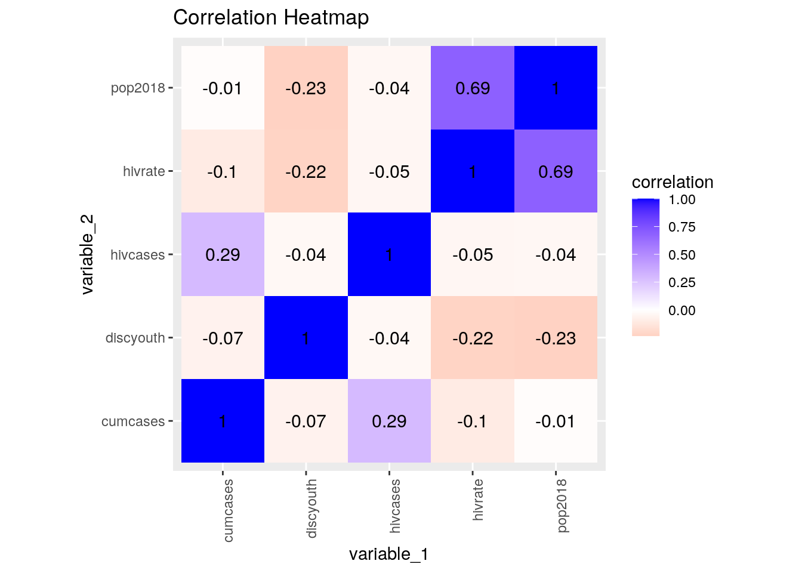
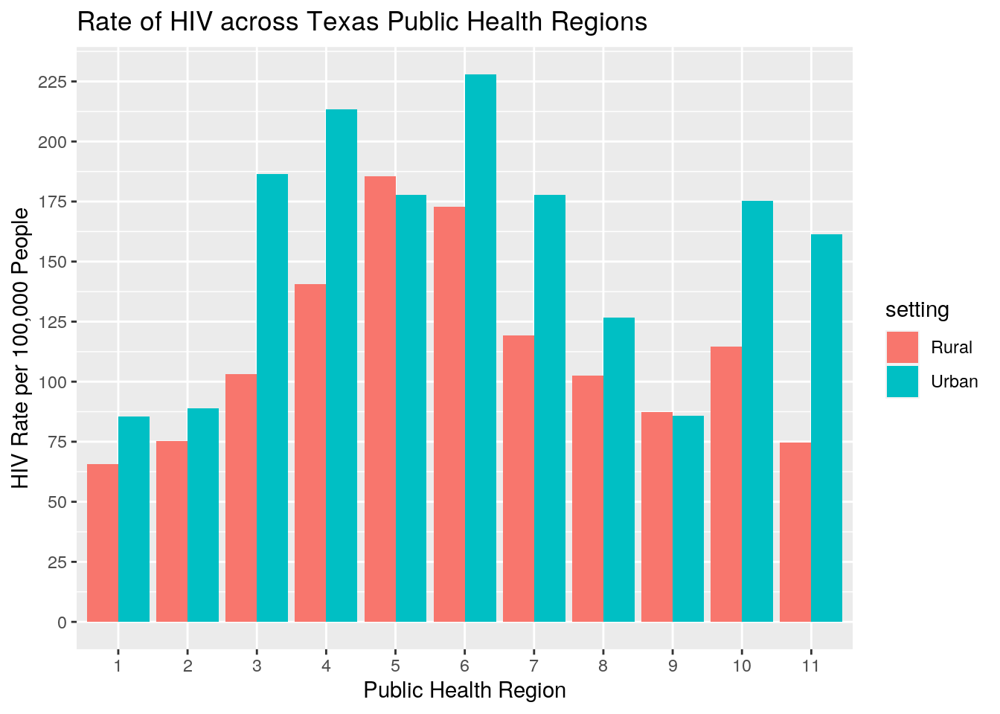
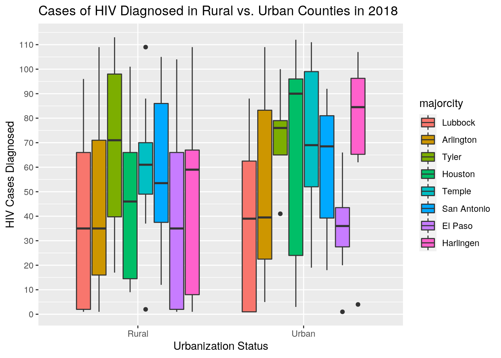
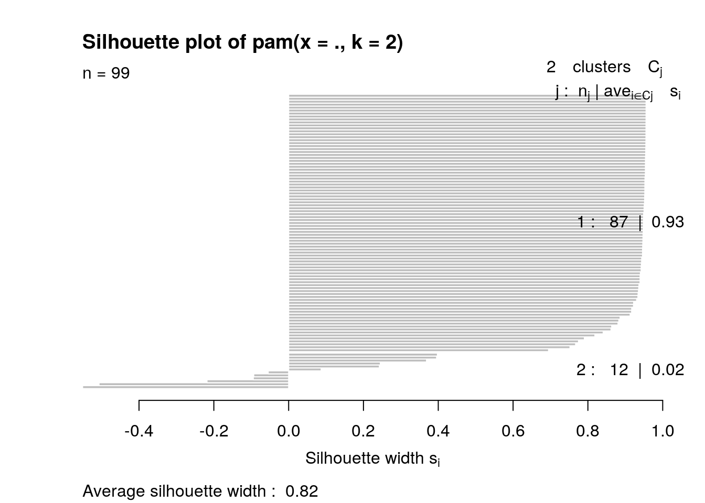
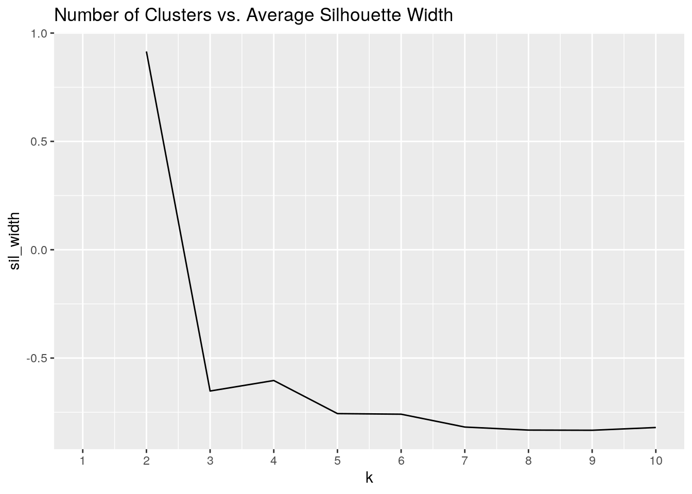
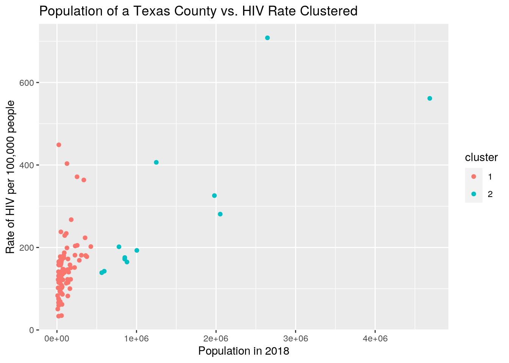
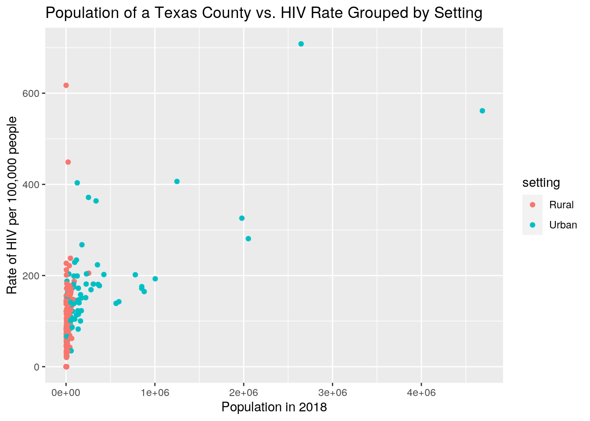

For my exploratory data analysis, I chose to use the data I previously used for my SDS 328M final project last semester. For my final project last semester, I had manually combined different datasets to determine if there was any relationship between the rate of HIV in a given county, its urbanization status or setting (meaning if it was rural or urban), and the percentage of disconnected youth (meaning the percentage of people ages 16-19 that were not in school or employed). The variables I will be exploring for this project are the ones I previously mentioned as well as the number of diagnosed HIV cases, the number of cumulative HIV cases, the public health region of the county, the major city assigned to each public health region, and the population of each county. I collected most of my data from the Texas Department of State Health Services - all of my data about HIV rates and cases came from the 2018 Annual Texas HIV Surveillance Report, more specifically. The Texas DSHS is currently revising the definition of rural and urban counties, so I'm using the data I saved for my SDS 328M project to determine county setting. Additionally, the data I collected on the percentage of disconnected youth came from countyhealthrankings.org and the data I collected on population values from 2018 came from demographics.texas.gov. I chose to look at these variables because I wanted to see what kinds of factors have an impact on the rate of HIV - I chose Texas counties specifically simply because it was easiest to find many different observations within one state and compare data across those observations. As I already did an analysis of how setting and percentage of disconnected youth affect HIV rate, I will hypothesize on the effects of the other variables present instead. I assume there will be a direct relationship within the HIV-related variables themselves as well as population of a county and that there will be some sort of relationship between public health region and HIV rates, but I don't know enough about the differences between each region to know what kind of relationship (if any) will exist.
My datasets were already tidy to begin with, so I used functions pivot_longer and attempted to use pivot_wider to tidy up my table of summary statistics. Unfortunately, I tried to use pivot_wider on my resulting summary statistics tables various times, and it kept coming up with errors for whatever reason. It would have been ideal to tidy up the tables even further to make them easier to read, but I think the tables are still readable and relatively tidy nonetheless.
To combine my datasets 'hrdata' and 'dydata', I performed a left_join on 'hrdata' with 'dydata' and set their common ID to be the county names. This join was somewhat arbitrary as I also could have done a right_join, but essentially these two functions would have kept both of the datasets original data which is what I wanted. This overall join was renamed to 'alldata' and resulted in a dataset with 254 rows (for 254 counties) and 7 columns, including county name. I performed another left_join with the dataset 'popdata' to add a row with population values of each county. I did not drop any cases because there are only 99 counties with data on disconnected youth and I still want to observe any relationships that are present between HIV rate and public health region, even if there is not information on the percentage of disconnected youth in most counties.
library(dplyr)
library(tidyverse)
library(ggplot2)
library(cluster)
hrdata <- read.csv("https://drive.google.com/uc?export=download&id=1ZMRoBv9L1KCimrD1u8kNfQkSgULe6bHw")
dydata <- read.csv("https://drive.google.com/uc?export=download&id=17wziLrncgXSiu_abNZ51D99kUAMA3fld")
popdata <- read.csv("https://drive.google.com/uc?export=download&id=1oLutVw2p9LyOc5UD4e2UdpNXADTos_el")
popdata <- popdata %>% select("county", "pop2018")
alldata <- hrdata %>% left_join(dydata, by = c(County = "county"))
alldata <- alldata %>% left_join(popdata, by = c(County = "county"))
alldata %>% glimpse()## Rows: 254
## Columns: 8
## $ County <fct> Anderson, Andrews, Angelina, Aransas, Archer, Armstrong, At…
## $ discyouth <int> 11, NA, 11, NA, NA, NA, 14, NA, NA, NA, NA, NA, NA, 7, 8, N…
## $ setting <fct> Rural, Rural, Rural, Urban, Urban, Urban, Urban, Urban, Rur…
## $ hivcases <fct> "98", "15", "163", "35", "2", "0", "64", "61", "3", "23", "…
## $ hivrate <dbl> 168.8, 82.7, 187.2, 147.1, 22.8, 0.0, 127.2, 203.4, 42.7, 1…
## $ cumcases <fct> "191", "17", "273", "56", "6", "1", "82", "65", "7", "32", …
## $ phregion <int> 4, 9, 5, 11, 2, 1, 8, 6, 1, 8, 7, 2, 11, 7, 8, 7, 9, 7, 4, …
## $ pop2018 <int> 58979, 18678, 91687, 23724, 9459, 1948, 50233, 31504, 7179,…First, I transformed almost every single one of the variables to the appropriate type of variable. Then I selected all of the numeric variables in order to find their corresponding summary statistics: mean, standard deviation, minimum, maximum, count, and variance. This resulted in a table with 35 columns, with each column following this format: 'data_statistic'. The functions pivot_longer and separate were then used to turn the columns into singular observations as well as to separate the type of statistic being reported. Finally, the table was arranged to show all of the statistics for one numeric variable at a time, and all of the duplicate observations were removed. After creating my table of summary statistics without any grouping, I mutated the variable phregion or the public health region and created a new variable called majorcity, which provides the name of the city where the headquarters of the Texas DSHS is located. After creating a new variable, I filtered the data by their two settings, Rural and Urban, to find their respective summary statistics and tidied up their corresponding tables using pivot_longer. I repeated this process but instead of using filter, I grouped the data by two categorical variables, setting and public health region and created a summary statistics table. Finally, a correlation matrix was made for the eventual creation of a correlation heatmap.
According to the summary statistics table, the average number of cumulative cases of HIV in each county was 59 cases with a standard deviation of 37. The lowest number of cumulative cases in a Texas county is 1 per 100,000 while the greatest is 127 per 100,000. For the 99 counties that did have data on disconnected youth, the average percentage of disconnected youth present was approximately 11%, with a standard deviation of 6%. The lowest percentage of disconnected youth in a county was 1% while the highest was 44%. The average number of HIV cases in a Texas county was 51 cases per 100,000, with a standard deviation of 34 cases per 100,000. The lowest number of cases a Texas county had was 1 case per 100,000 while the greatest number of cases was 113 per 100,000. The average HIV rate was 119 cases per 100,00 with a standard deviation of 91, and the lowest HIV rate a county had was 0 cases per 100,000 while the highest was 708 cases per 100,000. The average population of a Texas county was 113,370 people, with a standard deviation of 406,300 people. The lowest number of people in a given county was 94 while the highest number of people was 4,686,780. After mutating majorcity, there were 8 separate major cities created.
alldata$hivcases <- as.numeric(alldata$hivcases)
alldata$cumcases <- as.numeric(alldata$cumcases)
alldata$discyouth <- as.numeric(alldata$discyouth)
alldata$pop2018 <- as.numeric(alldata$pop2018)
alldata <- alldata %>% mutate_if(is.integer, as.factor)
alldata %>% glimpse()## Rows: 254
## Columns: 8
## $ County <fct> Anderson, Andrews, Angelina, Aransas, Archer, Armstrong, At…
## $ discyouth <dbl> 11, NA, 11, NA, NA, NA, 14, NA, NA, NA, NA, NA, NA, 7, 8, N…
## $ setting <fct> Rural, Rural, Rural, Urban, Urban, Urban, Urban, Urban, Rur…
## $ hivcases <dbl> 113, 23, 28, 62, 35, 1, 92, 90, 55, 43, 31, 35, 73, 103, 89…
## $ hivrate <dbl> 168.8, 82.7, 187.2, 147.1, 22.8, 0.0, 127.2, 203.4, 42.7, 1…
## $ cumcases <dbl> 41, 36, 55, 92, 94, 2, 121, 101, 107, 65, 46, 44, 110, 127,…
## $ phregion <fct> 4, 9, 5, 11, 2, 1, 8, 6, 1, 8, 7, 2, 11, 7, 8, 7, 9, 7, 4, …
## $ pop2018 <dbl> 58979, 18678, 91687, 23724, 9459, 1948, 50233, 31504, 7179,…alldata %>% select_if(is.numeric) %>% summarize_all(c("mean",
"sd", "min", "max", "quantile", "n_distinct", "var"), na.rm = T) %>%
pivot_longer(contains("_"), names_to = "stats1", values_to = "values") %>%
separate(stats1, into = c("data", "stats")) %>% arrange(data) %>%
distinct()## # A tibble: 55 x 3
## data stats values
## <chr> <chr> <dbl>
## 1 cumcases mean 59.0
## 2 cumcases sd 36.9
## 3 cumcases min 1
## 4 cumcases max 127
## 5 cumcases quantile 1
## 6 cumcases n 127
## 7 cumcases var 1360.
## 8 cumcases quantile 27
## 9 cumcases quantile 57.5
## 10 cumcases quantile 89.8
## # … with 45 more rowsmajorcityalldata <- alldata %>% mutate(majorcity = recode(phregion, `1` = "Lubbock",
`2` = "Arlington", `3` = "Arlington", `4` = "Tyler", `5` = "Houston",
`6` = "Houston", `7` = "Temple", `8` = "San Antonio", `9` = "El Paso",
`10` = "El Paso", `11` = "Harlingen"))alldata %>% group_by(setting) %>% filter(setting == "Rural") %>%
select_if(is.numeric) %>% summarize_all(c("mean", "sd", "min",
"max", "quantile", "n_distinct", "var"), na.rm = T) %>% pivot_longer(contains("_"),
names_to = "stats1", values_to = "values") %>% separate(stats1,
into = c("data", "stats")) %>% arrange(data) %>% distinct()## # A tibble: 55 x 4
## # Groups: setting [1]
## setting data stats values
## <fct> <chr> <chr> <dbl>
## 1 Rural cumcases mean 56.3
## 2 Rural cumcases sd 35.7
## 3 Rural cumcases min 1
## 4 Rural cumcases max 125
## 5 Rural cumcases quantile 1
## 6 Rural cumcases n 70
## 7 Rural cumcases var 1273.
## 8 Rural cumcases quantile 27
## 9 Rural cumcases quantile 52
## 10 Rural cumcases quantile 87.2
## # … with 45 more rowsalldata %>% group_by(setting) %>% filter(setting == "Urban") %>%
select_if(is.numeric) %>% summarize_all(c("mean", "sd", "min",
"max", "quantile", "n_distinct", "var"), na.rm = T) %>% pivot_longer(contains("_"),
names_to = "stats1", values_to = "values") %>% separate(stats1,
into = c("data", "stats")) %>% arrange(data) %>% distinct()## # A tibble: 55 x 4
## # Groups: setting [1]
## setting data stats values
## <fct> <chr> <chr> <dbl>
## 1 Urban cumcases mean 64.7
## 2 Urban cumcases sd 38.9
## 3 Urban cumcases min 1
## 4 Urban cumcases max 127
## 5 Urban cumcases quantile 1
## 6 Urban cumcases n 76
## 7 Urban cumcases var 1511.
## 8 Urban cumcases quantile 30.2
## 9 Urban cumcases quantile 65.5
## 10 Urban cumcases quantile 99.8
## # … with 45 more rowsalldata %>% group_by(setting, phregion) %>% select_if(is.numeric) %>%
summarize_all(c("mean", "sd", "min", "max", "quantile", "n_distinct",
"var"), na.rm = T) %>% pivot_longer(contains("_"), names_to = "stats1",
values_to = "values") %>% separate(stats1, into = c("data",
"stats")) %>% arrange(data) %>% distinct()## # A tibble: 1,198 x 5
## # Groups: setting, phregion [22]
## setting phregion data stats values
## <fct> <fct> <chr> <chr> <dbl>
## 1 Rural 1 cumcases mean 55.2
## 2 Rural 1 cumcases sd 39.3
## 3 Rural 1 cumcases min 1
## 4 Rural 1 cumcases max 123
## 5 Rural 1 cumcases quantile 1
## 6 Rural 1 cumcases n 18
## 7 Rural 1 cumcases var 1541.
## 8 Rural 1 cumcases quantile 24
## 9 Rural 1 cumcases quantile 59
## 10 Rural 1 cumcases quantile 94
## # … with 1,188 more rowsalldatacor <- alldata %>% select_if(is.numeric) %>% na.omit %>%
cor
alldatacor## discyouth hivcases hivrate cumcases pop2018
## discyouth 1.00000000 -0.03827004 -0.22474728 -0.06631817 -0.23390208
## hivcases -0.03827004 1.00000000 -0.04746276 0.29447358 -0.04192388
## hivrate -0.22474728 -0.04746276 1.00000000 -0.10248605 0.68976105
## cumcases -0.06631817 0.29447358 -0.10248605 1.00000000 -0.01368516
## pop2018 -0.23390208 -0.04192388 0.68976105 -0.01368516 1.00000000adcgraph <- alldatacor %>% as.data.frame %>% rownames_to_column("variable_1") %>%
pivot_longer(-1, names_to = "variable_2", values_to = "correlation")
adcgraph %>% ggplot(aes(variable_1, variable_2, fill = correlation)) +
geom_tile() + scale_fill_gradient2(low = "red", mid = "white",
high = "blue") + geom_text(aes(label = round(correlation,
2)), color = "black", size = 4) + theme(axis.text.x = element_text(angle = 90,
hjust = 1)) + coord_fixed() + ggtitle("Correlation Heatmap")
According to the correlation heatmap, it is reasonable that there is some sort of positive (albeit weak) correlation between HIV cases diagnosed in a year and cumulative cases of HIV, as those are variables that build on each other. There is also a moderately strong correlation between HIV rate and population, which is reasonable because with more people, there is more chance of interaction and exchange of disease, especially in urban areas. More importantly, people in more populated areas tend to have better access to healthcare thus there is the possibility for more diagnoses overall in a more populated county. There is a weakly negative correlation between disconnected youth and both HIV rate as well as population. The negative correlation between disconnected youth and population is reasonable, because as previously stated, there are more resources in a more densely populated place, thus making it less likely for a teenager to be unemployed or not in school in these areas. A greater HIV rate correlates with a lower disconnected youth percentage, which by itself doesn't quite make sense, but when considering why the HIV rate itself is greater (most likely because of population density), then the greater population overall does explain why there is a negative correlation between the two.
alldata %>% ggplot(aes(phregion, hivrate, fill = setting)) +
geom_bar(stat = "summary", palette = "Blues", position = "dodge") +
ggtitle("Rate of HIV across Texas Public Health Regions") +
xlab("Public Health Region") + ylab("HIV Rate per 100,000 People") +
scale_y_continuous(breaks = seq(0, 250, 25))
The second plot is a bar graph demonstrating the interaction between rate of HIV per 100,000 people and the public health region a county pertains to with a separate grouping by setting. The only two regions where there is a higher rate of HIV in the rural counties rather than the urban counties are regions 5 and 9, where region 5 has an average HIV rate of 175 cases per 100,000 people while region 9 has an average HIV rate of 87.5 cases per 100,000 people. However, the difference in the two settings is so minimal that it would be reasonable to say generally speaking, the urban counties in Texas have a higher rate of HIV than the rural counties. The three regions with the lowest HIV rates are regions 1, 2, and 9 while the three regions with the highest HIV rates are 3, 4, and 6. Region 1 has an average HIV rate of 75 cases per 100,000 people while region 2 has an average HIV rate of 80 cases per 100,000 people. Region 3 has an average HIV rate of 140 cases per 100,000 people, region 4 has an average HIV rate of 160 cases per 100,000 people, and region 6 has an average HIV rate of 200 cases per 100,000 people.
alldata %>% ggplot(aes(setting, hivcases, fill = majorcity)) +
geom_boxplot() + xlab("Urbanization Status") + ylab("HIV Cases Diagnosed") +
ggtitle("Cases of HIV Diagnosed in Rural vs. Urban Counties in 2018") +
scale_y_continuous(breaks = seq(0, 120, 10))
The third plot is a box plot demonstrating the interaction between cases of HIV diagnosed in 2018 and the setting of a county with a separate grouping by major city. The only city without a significant difference when considering setting is Lubbock - every other city has a significant difference in distribution of HIV cases. In the case of Lubbock, their HIV cases are asymmetrically distributed and over around a mean of 35-40 cases a year. Houston has the greatest distribution among the urban counties, with a range of about 100 cases. There are various outliers for both urban and rural counties alike, with the rural counties of Temple having both high and low outliers while the urban counties of Tyler, El Paso, and Harlingen having only low outliers. The rural counties had an average number of HIV cases of around 45-50 while the urban counties had an average number of HIV cases of around 60. Finally, the values for rural counties appear to be more spread out while the values for the urban counties appear to be closer together.
PAM clustering was performed on the population, HIV rates, and percentage of disconnected youth of 99 Texas counties. After creating various silhouette plots and creating a graph that plotted the number of clusters versus the silhouette width, I determined the ideal number of clusters to be merely 2. I plotted both population vs. HIV rates and disconnected youth vs. HIV rates and felt that the former more clearly depicted the 2 clusters created. Finally, I created a plot graphing the population and HIV rates while grouping the points by setting. It appears that the two clusters are defined by if their population is greater or less than 500,000 - the first cluster is all of the counties with a smaller population, while the second cluster is all of the counties with a greater population. When the same data is plotted with a grouping by setting, there is a noticeable coincidence with the previous clustering, but they are still not completely the same. In summary, there is clearly a strong influence of population with the clustering of these data and not as great of an influence of factors like percentage of disconnected youth.
clustad <- alldata %>% dplyr::select(hivrate, pop2018, discyouth) %>%
na.omitpamad <- clustad %>% pam(k = 2)
pamad## Medoids:
## ID hivrate pop2018 discyouth
## 100 33 108.4 58355 9
## 108 38 164.8 880024 9
## Clustering vector:
## 1 3 7 14 15 19 20 21 25 28 31 34 37 42 43 46 50 57 61 68
## 1 1 1 1 2 1 1 1 1 1 1 1 1 1 2 1 1 2 2 1
## 70 71 74 79 81 82 83 84 90 91 92 94 100 101 102 105 107 108 109 110
## 2 1 1 2 1 1 1 1 1 1 1 1 1 2 1 1 1 2 1 1
## 111 112 113 114 116 123 125 126 127 128 129 133 140 146 147 152 159 161 165 169
## 1 1 1 1 1 1 1 1 1 1 1 1 1 1 1 1 1 1 1 1
## 170 174 175 177 178 181 183 184 185 187 188 191 195 201 205 210 212 214 220 221
## 2 1 1 1 1 1 1 1 1 1 1 1 1 1 1 1 1 1 2 1
## 225 226 227 229 230 233 234 235 236 237 239 240 241 243 245 246 247 249 250
## 1 1 2 1 1 1 1 1 1 1 1 1 1 1 1 2 1 1 1
## Objective function:
## build swap
## 148589.4 147922.2
##
## Available components:
## [1] "medoids" "id.med" "clustering" "objective" "isolation"
## [6] "clusinfo" "silinfo" "diss" "call" "data"pamad$silinfo$avg.width## [1] 0.8189314plot(pamad, which = 2)
pam_dat <- alldata %>% select(hivrate, pop2018, discyouth)
sil_width <- vector()
for (i in 2:10) {
pam_fit <- pam(pam_dat, k = i)
sil_width[i] <- pam_fit$silinfo$avg.width
}
ggplot() + geom_line(aes(x = 1:10, y = sil_width)) + scale_x_continuous(name = "k",
breaks = 1:10) + ggtitle("Number of Clusters vs. Average Silhouette Width")
pamclust <- clustad %>% mutate(cluster = as.factor(pamad$clustering))
pamclust %>% ggplot(aes(pop2018, hivrate, color = cluster)) +
geom_point() + xlab("Population in 2018") + ylab("Rate of HIV per 100,000 people") +
ggtitle("Population of a Texas County vs. HIV Rate Clustered")
alldata %>% ggplot(aes(pop2018, hivrate, color = setting)) +
geom_point() + xlab("Population in 2018") + ylab("Rate of HIV per 100,000 people") +
ggtitle("Population of a Texas County vs. HIV Rate Grouped by Setting")